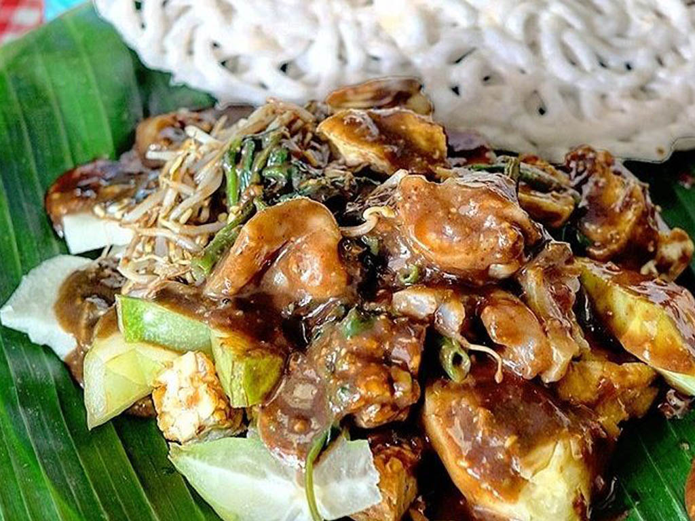

Rawon
Rawon is an Indonesian beef soup. Originating from Surabaya, East Java, rawon utilizes the black keluak nut as the main seasoning, which gives a dark color and nutty flavor to the soup.
Sate Klopo
This sate klopo can use chicken or beef. Beef or chicken will later be pierced like a skewer usually, then given grated coconut and burned using charcoal and clamped.

Rujak
Rujak Cingur is a fruit-vegetables salad with spicy sauce. Literally “cingur” means mouth in Javanese. This food has become the unique taste of Surabaya.
Sego Sambel
Sego sambel becomes one of the typical foods of Surabaya, East Java that has a spicy taste. Food consisting of rice, chili, and various side dishes. The rice is served on a plate, then topped with a side dish of omelet, fried soybeans, tempeh, tofu, chicken, or meat.

Lontong Balap
Lontong Balap is an Indonesian traditional rice dish, well known in Javanese cuisine, made of lontong (pressed rice cake), tauge (bean sprouts), fried tofu, lentho (fried mashed beans), fried shallots, sambal petis and sweet soy sauce.
Tahu Campur
Tahu campur, is a Surabaya tofu dish. The dish consists of sliced fried tofu, rice cakes, cassava patty cakes, fresh bean sprouts, fresh lettuce, yellow noodles, and krupuk crackers, served in savoury beef stew, garnished with fried onions, and chili sauce.